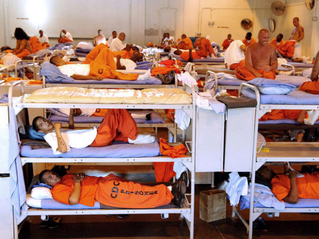
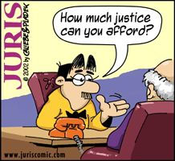

[H] and [L] move the camera view left or right. Press [W] and [S] to slide along the view, while [A] and [D] are direct translations left or right. Pressing T locks on to the central cube]
Louisiana boy attempts to: Visualize data hereHere is a cluster by cluster visualization of crime data. Each group shares one characteristic in common. In this case, that characteristic is crime type commited, symbolized by the letters in the circles. One can change the type displayed by changing the variable "stratify" in dvis.js
 Louisiana boy attempts to: Watch colorful attorneys (debate?)Simple. A few snakes. Press A or D to turn
